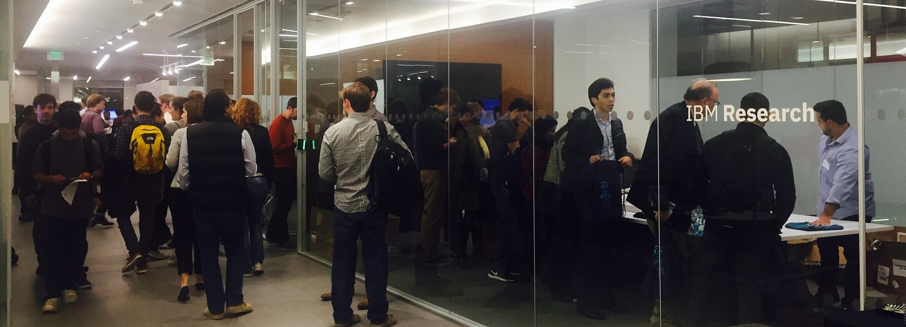

On Friday April 27th, MIT and IBM Research will co-host
the 2nd North East Computational Health Summit.
The theme of this year’s summit is AI in Healthcare,
with the objective of bringing together machine learning,
medical informatics and computational health professionals
to share latest developments and explore potential
collaborations to unlock the potential of
Artificial Intelligence for Healthcare.
We will also feature an interactive panel,
as well as submitted papers and posters on
various aspects of computational health including
deep learning, observational studies, predictive modelling,
translational informatics, patient engagement,
explanatory models, health behavior and digital health.
There will also be ample opportunities for less formal
interactions at lunch-time, and well as during the poster
session and breaks.
We invite submissions of abstracts describing all aspects of
research relating to design and implementation of AI solutions
in healthcare. This encompasses relevant tasks in data mining,
data analytics, data science, natural language processing and
machine learning as well as explanatory models. The primary emphasis
is on advances in the science and application of AI in healthcare.
Submitted abstracts will go through a peer review process and will
be selected for either podium or poster presentations by the
review committee. Some poster presentations will also be
selected for a short oral spotlight presentation prior to
the poster session.
Submissions
Submissions are limited to a total of 1 page,
including all content and references.
Submission can be made via an
EasyChair submission.
Key Dates
- Abstracts due: Abstract submission is now closed.
- Notification to Submitters: 03/26/2018.
- Meeting Date: 04/27/2018
Attendance
For each accepted paper or poster,
at least one author must attend the conference and present the
paper/poster. There will be no official publication of papers,
however, podium presentations will be video-taped and presenters
will be asked to sign a release form to allow the videos to be made
available on the conference web site.
While we are seeking to showcase new
work, our summit does allow
submission of papers that are under review or have been recently
published in a conference or a journal.